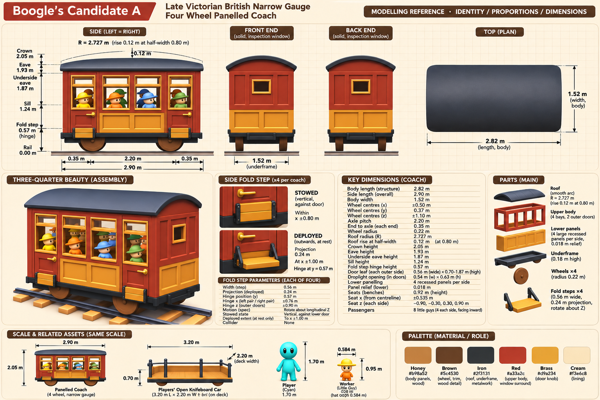
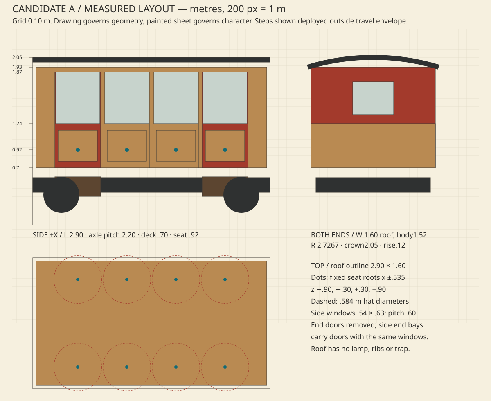
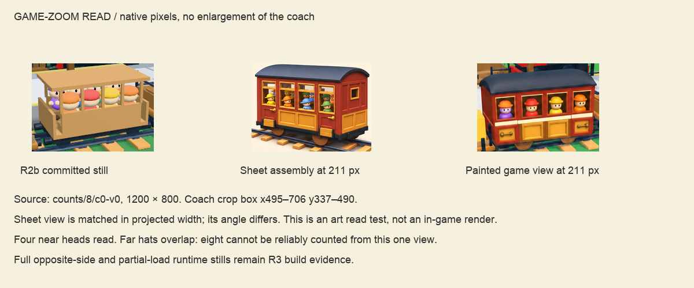
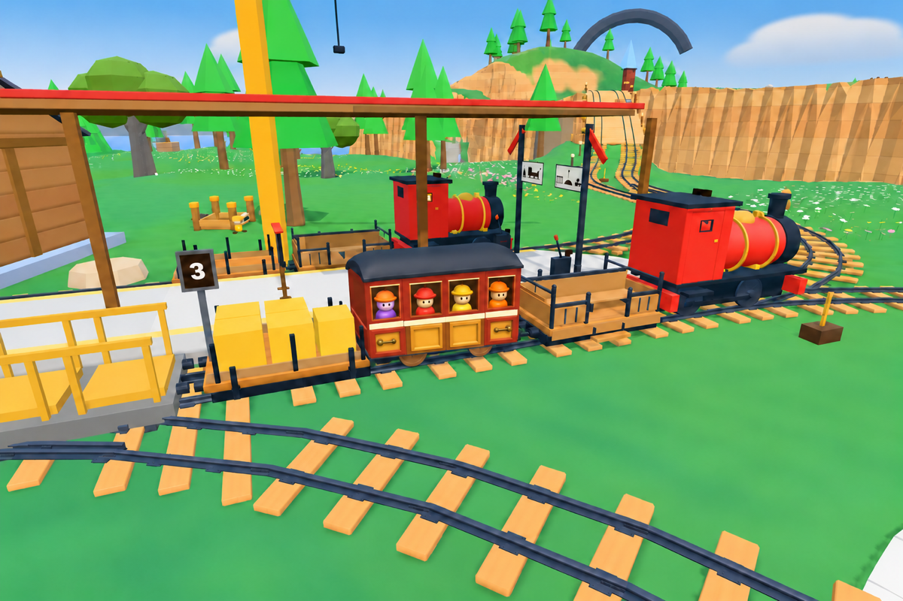

Original candidates · R3 plan · 16 November
2026
The panelled coach, at its real size
Candidate A: 2.90 × 1.60 m, crown 2.05 m. Eight fixed seats, four open droplights each side. Painted
modelling references and a build brief; no game code or runtime asset. Late-Victorian British narrow-gauge
character (1870–1900 is an inference).
Turnaround and assembly

The chosen honey panels, red window band, dark arc roof and four-wheel silhouette survive. Four windows remain.
At 1.60 m, the internal benches leave only about 0.72 m between their inner edges. There is no room for the
earlier image's generous interior or separate vestibules.
Smallest access correction: the first and fourth window bays become side doors, with the same openings
and seats. This gives two platform-facing doors per side without adding length. End doors become solid end
panels with a small inspection opening. This resolves the earlier image's end-only access, but actual knees and
entry paths still need the build inspection.
Painted drawing errors: the top is mislabelled with body dimensions, while the roof is 2.90 × 1.60; the end view
underframe label should read 1.40 m. Several small hat/seat labels are garbled. The 3/4 painting exaggerates
height and far-row separation. Raised inner window bars shown in paint are omitted: all .54 × .63 openings are
completely clear. Use the measured layout and brief below for geometry.

Measured orthographic supplement: 200 px = 1 m; grid .10 m. Both ends are identical. Roof radius 2.7267 m, rise
.12 m, crown2.05, eave1.93; .04 overhang included in the envelope. No lamp pots, ribs or roof obstructions. Hat
circles in plan are schematic full diameters, not rig collision evidence.
Read at game zoom

My read: yes, the roof, panel relief and contrasting window band now say the coach the owner chose. The
blockout says open box. At roughly 200 pixels wide, four near faces read; eight cannot be reliably counted from
one side. Opposite-side views are needed to see the other four. The enclosed roof inevitably hides more than the
blockout, particularly from high cameras. Keep the clear openings and avoid shrinking hats or moving seats.
Width matched to the committed 1200 × 800 still's coach crop, 211 pixels including margins. Assembly angle
differs from the running-game camera, so this tests art readability rather than matched runtime visibility.
Full committed blockout still.
The chosen look and compact translation

Original chosen image, reused unchanged. It drew a larger room, roof ribs, extra window framing and an end door;
it omitted the cargo car. Those details do not govern the measured build.

New look made with built-in OpenAI image_gen, anchored to the committed blockout. The compact footprint,
existing train order and cargo car are retained in intent. Four windows replace the generated first attempt's
extra bays. Broad lower panels, smooth roof, platform-side doors and stowed steps replace the original's detail.
Cream and brass are borrowed from the players' car recipe.
This is painted art at the specified envelope, not a measured render. Scene geometry, wheels, character poses
and far-row visibility drift in generation; the exact bounds and anchors are in the layout. A real GLB beside
today's train is still owed by R3. Model identifier and cost were not returned.
Exact prompts and attempts.
Build summary
| Part |
Metres / modelling instruction |
| Shell / roof |
Body 2.82 ×1.52; roof 2.90 ×1.60, R2.7267, thickness .06, crown2.05. |
| Panels / waist |
Four .48 ×.38 inset panels per side, .018 relief. Waist .08 high at1.16–1.24. |
| Openings / doors |
Four .54 ×.63 clear openings per side, .60 pitch. Sill1.24, .32 above seat. Outer bays: .56 ×1.17 door
leaves.
|
| Seats |
Two .35 ×2.40 benches; seat top.92. Eight anchors x±.535, z−.90,−.30,.30,.90, seated root.885. |
| Steps / board |
Four separate .56 ×.24 ×.04 treads, hinge x±.76,y.57,z±.90. Down to x±1.00 only while standing; no collider.
Running ledge .08 ×2.80.
|
| Underframe / wheels |
Existing 1.40 ×2.90 ×.18 frame, centre.49. Existing wheel batch: x±.50,y.37,z±1.10,R.22. Preserve kit
couplings/slack.
|
| Recipe / budget |
One merged fixed shell, optional underframe node, four separate steps, existing rotating wheels. Linear Col
vertex colours, shared kit material, no textures. Guide 2–4k new triangles; measure against players' car, no
invented cap.
|
Home outward uses east/down, homeward west/up. Pier terminal riders use east/down; after Q7 it is homeward
west/up with no rider service. Resolve platform-facing side in the coach's current local frame; only that side's
steps deploy. The sheet's stowed/down insets do not prove timing or platform-gap reach.
Full recipe-format build brief, anchors, palette and inspection matrix. R3
build stills: empty, part full and full8; both sides; Home and Pier; beside players' car. Inspect actual decoded
GLB, all inspection views and Buddy stage with real characters, then game-distance views and roof footing.
Not judged: actual hat/knee clearances, door access, collider/roof footing, boarding or step motion,
opposite-side runtime visibility, multiplayer, device cost or owner approval. No ROM data or derived assets; The
Boogler's copy unchanged, no suspect lines.